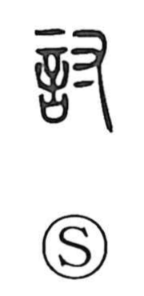

討

Uncategorized
Kun: utsu | On: tou
chastise ・ attack ・ inquire ・ discuss
Explanation
A phono-semantic character with 寸 as the phonetic element, 討 goes back to a hand-image: 寸 is understood as a form of 丑, showing fingers bent and gripping with force. From this image of applying pressure or a decisive grasp arose the sense of punitive action—‘to strike’ or ‘to chastise’—attested in classical passages that speak of punishing or subduing rebels, as seen in compounds like 討伐 and 征討. From the notion of pressing firmly came a figurative extension to the life of words: in 討究 it means to probe or inquire deeply, and in 討議・討論 it denotes rigorous debate—pressing an issue by thorough examination and exchange.